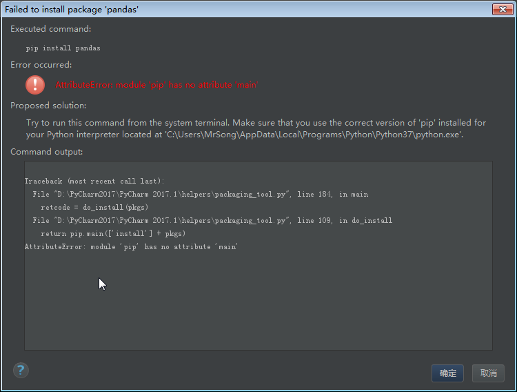
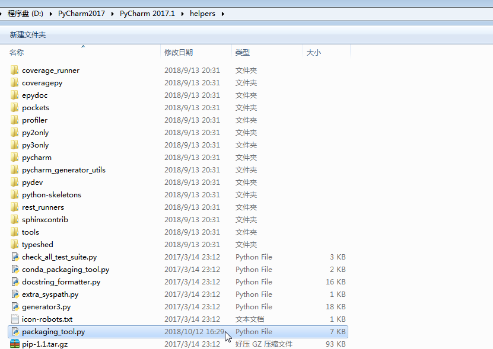
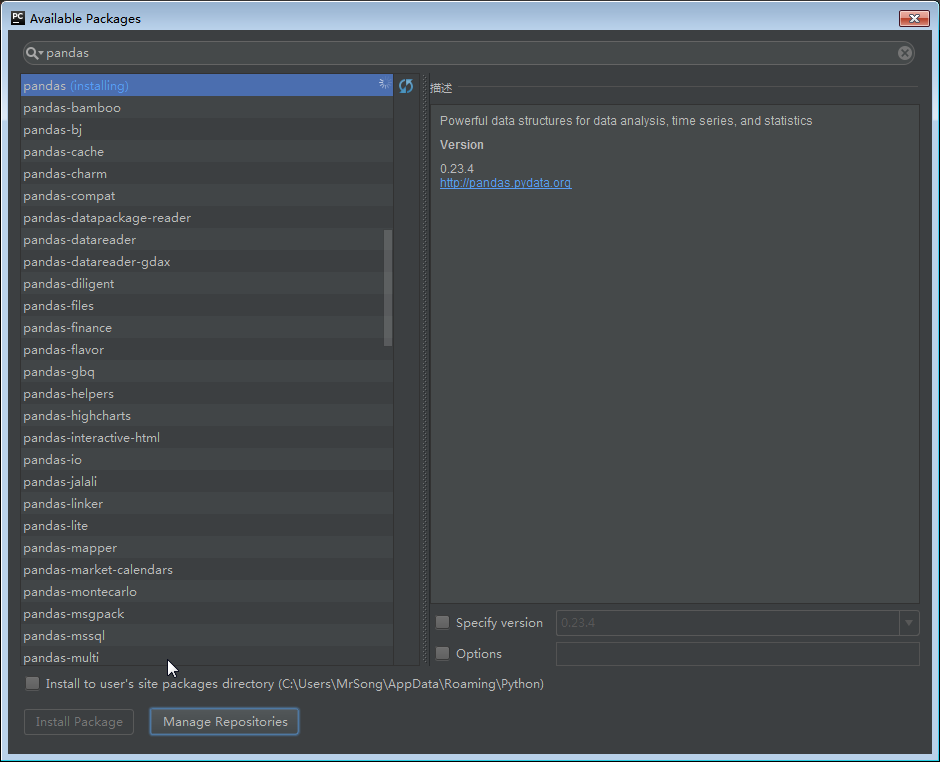

Pycharm安装pandas库失败报错：
AttributeError:’module’ object has no attribute ‘main’
参考资料：
使用 Pycharm 安装 pandas 库时失败报错如下：

原因：新版 pip 中的 main 函数已经发生了变化，是 pip 版本的原因
解决方法
打开PyCharm安装路径下的 helpers 文件夹下的 packaging_tool.py 文件。

找到 do_install 函数：
1 2 3 4 5 6
| def do_install(pkgs): try: import pip except ImportError: error_no_pip() return pip.main(['install'] + pkgs)
|
将其改为：
1 2 3 4 5 6 7 8 9
| def do_install(pkgs): try: try: from pip._internal import main except Exception: from pip import main except ImportError: error_no_pip() return main(['install'] + pkgs)
|
再将 do_uninstall 函数：
1 2 3 4 5 6
| def do_uninstall(pkgs): try: import pip except ImportError: error_no_pip() return pip.main(['uninstall', '-y'] + pkgs)
|
改为：
1 2 3 4 5 6 7 8 9
| def do_uninstall(pkgs): try: try: from pip._internal import main except Exception: from pip import main except ImportError: error_no_pip() return main(['uninstall','-y'] + pkgs)
|
重新打开PyCharm，再次安装即可
